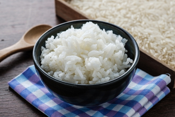

The White Rice of the Gods

Ingredients
- 1 Cup of vaporized rice
- 1/2 Tablespoon of salt
- 1/2 Brown Onion
- 3 Cloves of garlic
Step by Step
- Heat up 1 liter of water and proceed with the next steps.
- On another pan (it must be big enough to fit the water and the rice), add a table spoon of olive oil and heat it up
- Cut the onions in moon shape slices and shred the garlic.
- Add the onions and garlic to the pan, fry it until the onions are translucent.
- Add the rice and fry it until it beggins to stick on the pan, it will seal the grains of rice and they will not be sticky at the end.
- After that, if the water is boiling, put it into the rice, if not, wait until it boils and then put in to the pan. The water must cover the water in double of the amount of rice on the pan.
- Add the salt, mix it for 30 seconds and then wait of the water to boil again.
- When the rice water boils again, set the heat to medium/low, put the lid of the pan and wait until the water is dry (you can always verify by "digging a hole" on the rice to see if there is still water).